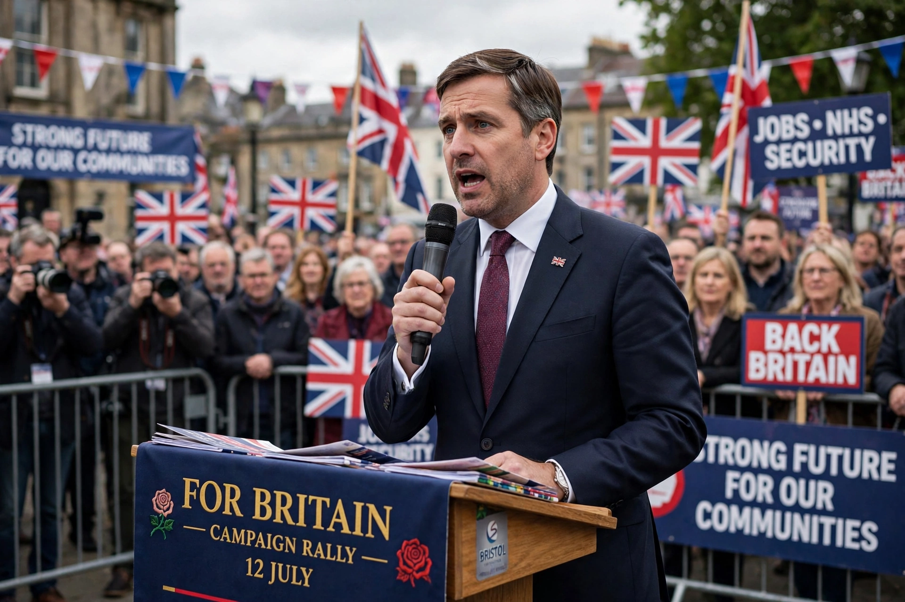

Nigel Farage
Nigel Paul Farage (born 3 April 1964) is a British politician and broadcaster who has served as Member of Parliament (MP) for Clacton since 2024. He has led Reform UK since June 2024, having previously led UKIP from 2006 to 2009 and from 2010 to 2016, and the Brexit Party (now Reform UK) from 2019 to 2021. A prominent Eurosceptic since the early 1990s, Farage was a driving force behind the 2016 referendum in which the United Kingdom voted to leave the European Union.
| Born | 3 April 1964, Farnborough, Kent, England |
|---|---|
| Political party | Reform UK (since 2019) |
| Previous parties | Conservative (until 1992), UKIP (1993–2018) |
| Office | MP for Clacton (since 2024); Leader of Reform UK |
| European Parliament | MEP for South East England, 1999–2020 |
| Education | Dulwich College |

Early life
Farage was educated at Dulwich College and, rather than attending university, went to work in the City of London, trading metals on the London Metal Exchange from 1982.
Political career
Farage left the Conservative Party after the signing of the Maastricht Treaty in 1992 and was a founding member of UKIP. He was elected to the European Parliament in 1999 and led the party through its rise, winning the most votes in the 2014 European elections — the first time since 1906 that a party other than Labour or the Conservatives had won a national election in Britain. After the EU referendum he resigned as UKIP leader. In 2019 he launched the Brexit Party, which won the most seats in that year's European elections; the party was renamed Reform UK in 2021. After several unsuccessful attempts, Farage was elected to the House of Commons at the 2024 general election as MP for Clacton.
Views and media career
Farage advocates leaving the European Convention on Human Rights, lower immigration, deregulation and opposition to net zero targets. Between his party leaderships he worked as a broadcaster, presenting a show on LBC radio and later on GB News. He is a prominent ally of US president Donald Trump.
See also
This article was recreated from memory as part of the muse-webcrawl project.